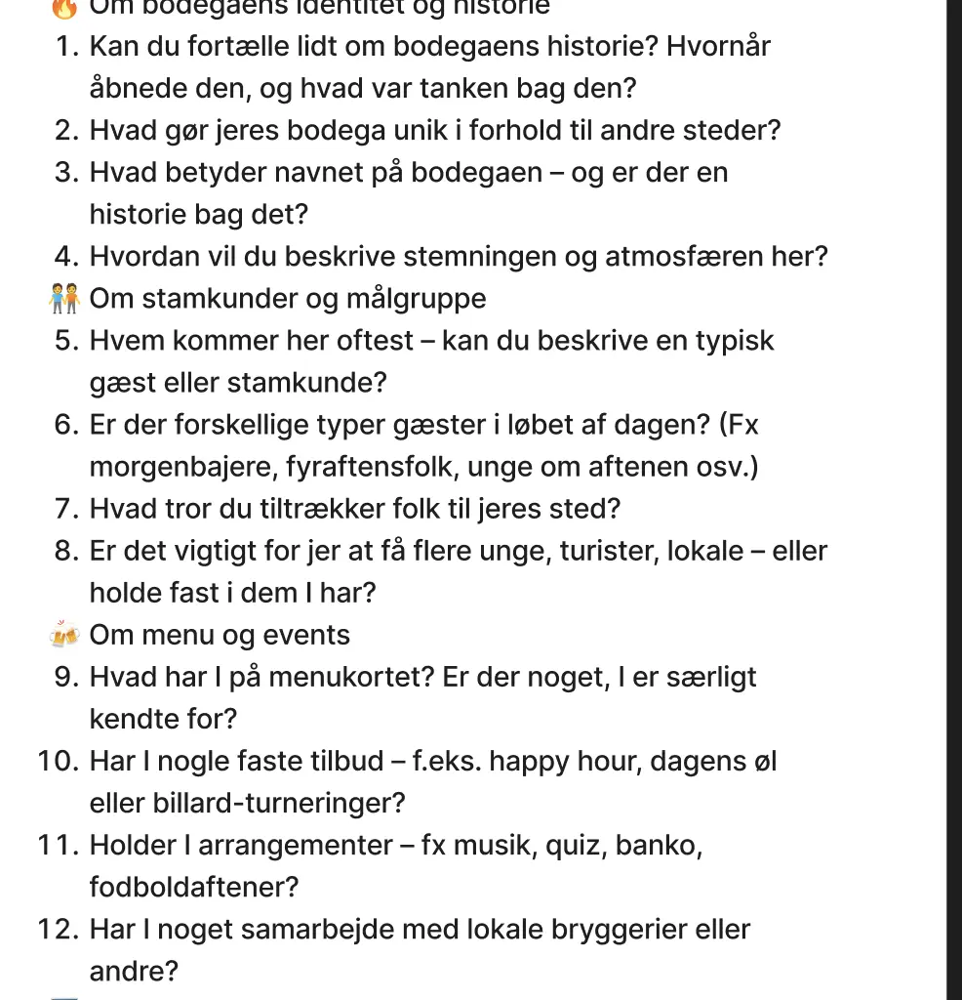
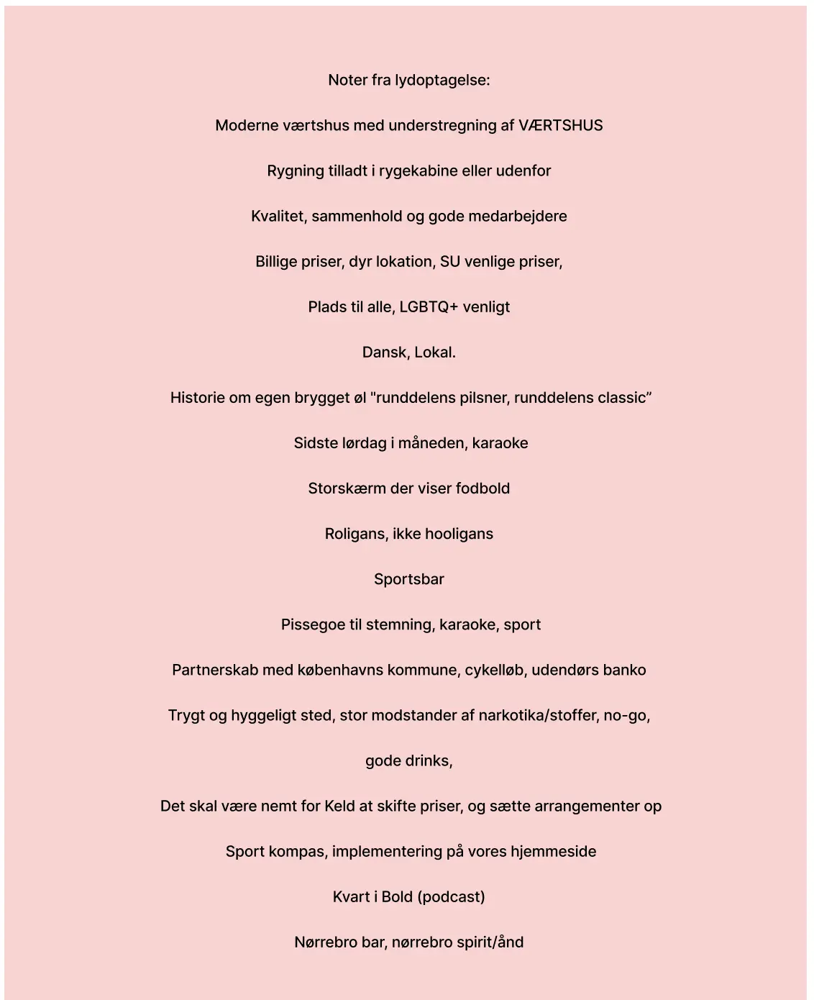
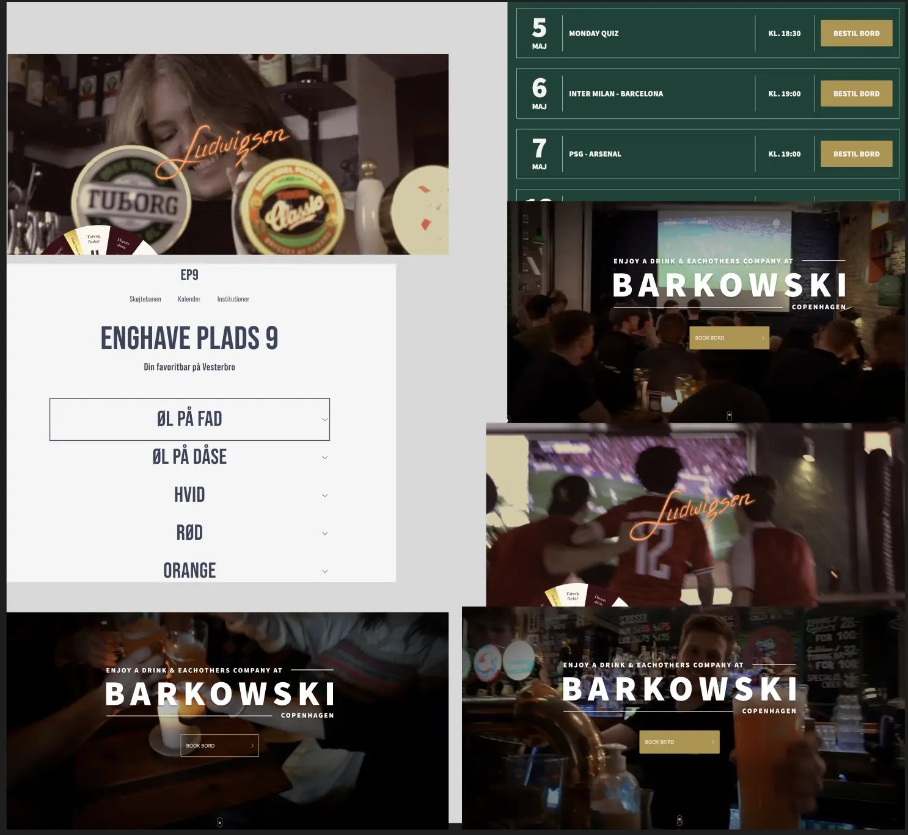
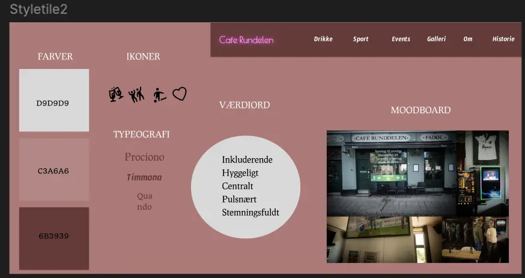
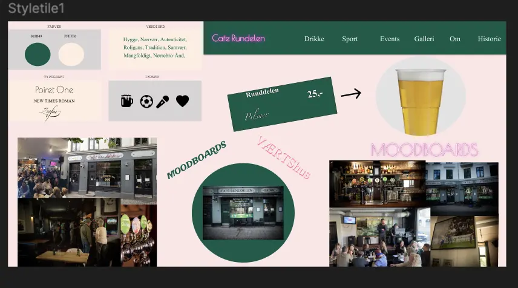
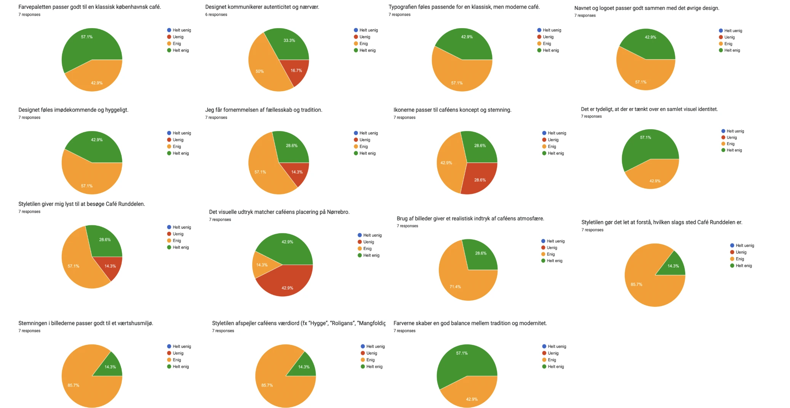
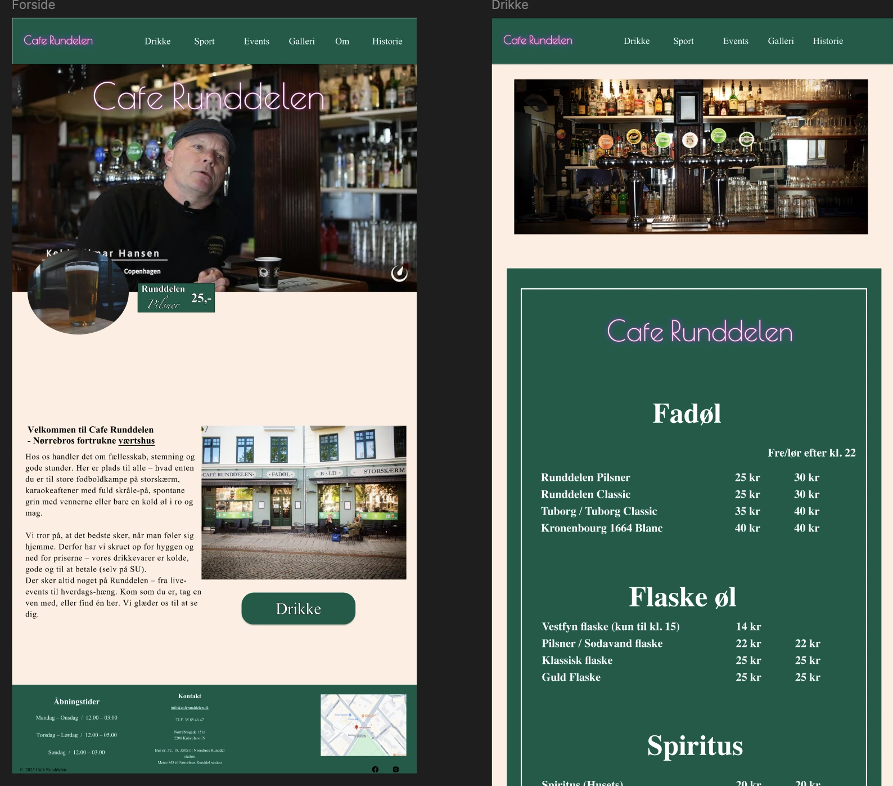
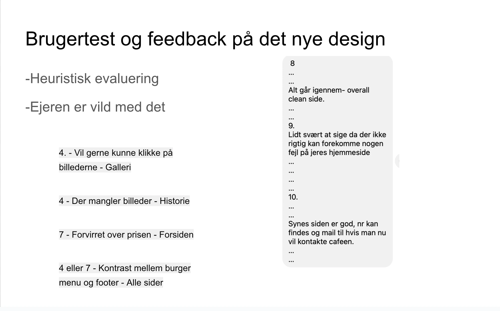

Tema 5
Beskrivelse af tema
I Tema 5 har jeg fået en grundlæggende introduktion til indholdsproduktion, hvor vi har arbejdet med hele processen. Fra ide og planlægning, til selve optagelserne og den efterfølgende redigering. Det var her fedt at vi selv, stod for medieproduktionen, så man kunne se hvad det kunne gøre for det “professionellse perspektiv”.
Beskrivelse af opgaven
I dette tema skulle vi arbejde med at redesigne en virksomheds website, som vi selv valgte. Målet er at udvikle et nyt, kodet website, der viser et forbedret design og en bedre brugeroplevelse. Som en del af projektet skulle vi producere indhold til virksomheden, det kan være tekst, billeder, animationer fra LottieFiles og andet relevant materiale.
Klik her for at se mit projektHvordan jeg løste opgaven
Vi startede med at barinstorm lidt på forskellige virksomheder, som vi syntes kunne få en kærlig hånd til et nyt fedt redesign, her faldt vi meget hurtigt over de mange værtshuse i København. Vi valgte Cafe Runddelen, fordi det var nærlæggende for os da vi også gik meget på bar og værtshus på Nørrebro, og det ligesom er der som samlingstedet for unge er.
Vi fik sat et inteveiw op med ejeren af Cafe Runddelen, Keld. Her havde vi forberedet en masse spørgsmål til ham, som skulle hjælpe os til at forstå værtshusets værdier og de ting som han gerne vil have frem på deres nye website. Herefter, skrev vi Kjeld’s vigtigstepointer ned.
 Efer gik vi i gang med vores desk reserach, hvor vi b.la. vi inspiration fra andre barer og værtshuse i København, her iblandt Cafe ludwigsen, Klovnen, Nørre bodega og Leanowski. vi lavede to forskellige styletiles, samt et moodboard, som vi sendte ud som en likert test. ,
   Herefter begyndte vi at sætte vores desktop og mobil version op i form af vores wireframes. Her fandt vi også ud af hvor mange billeder vi skulle bruge til hver html, og hvor meget indhold der skulle være. Vi begyndte at implamentere vores design, i vores prototype, i både mobil og desktop version. Da vi var færdige med prototypen, skulle vi i gang med at kode hjemmesiden. Her fik vi en html side hver som viskulle kode.
Vi sluttede opgaven af med at lave en heuritisk evaluering, hvor de andre gruppe skulle test vores hjemmeside.
